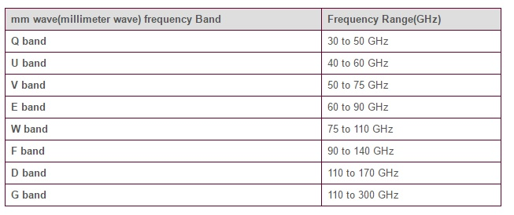
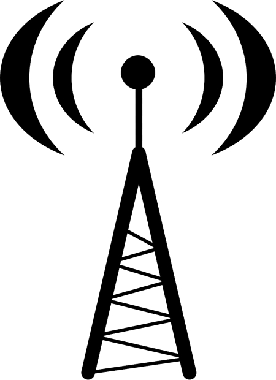

Millimeter Waves
Millimeter waves are a type of frequency that enable extremely high-speed wireless broadband internet. Millimeter wave technology uses between 30 and 300 GHz waves: In comparison, 3G uses 1.8-2.5 GHz waves, and 4G uses 2-8 GHz waves (Source). The wider spectrum allows not only for faster speed, but more simultaneous connections. This will prevent the network from being slowed down when too many people connect.

Problems with Millimeter Waves
Unfortunately, because they are so large, millimeter waves are prone to being absorbed by substances most waves would pass right through. Specifically, oxygen and water cause particular problems, as the wide spectrum of frequencies that millimeter waves operates on contains several absorption lines for both substances. The obvious solution that most applications employ is to simply not use these specific frequencies, opting instead to make use of the frequencies in the biggest spaces between these absorption lines (Source).
